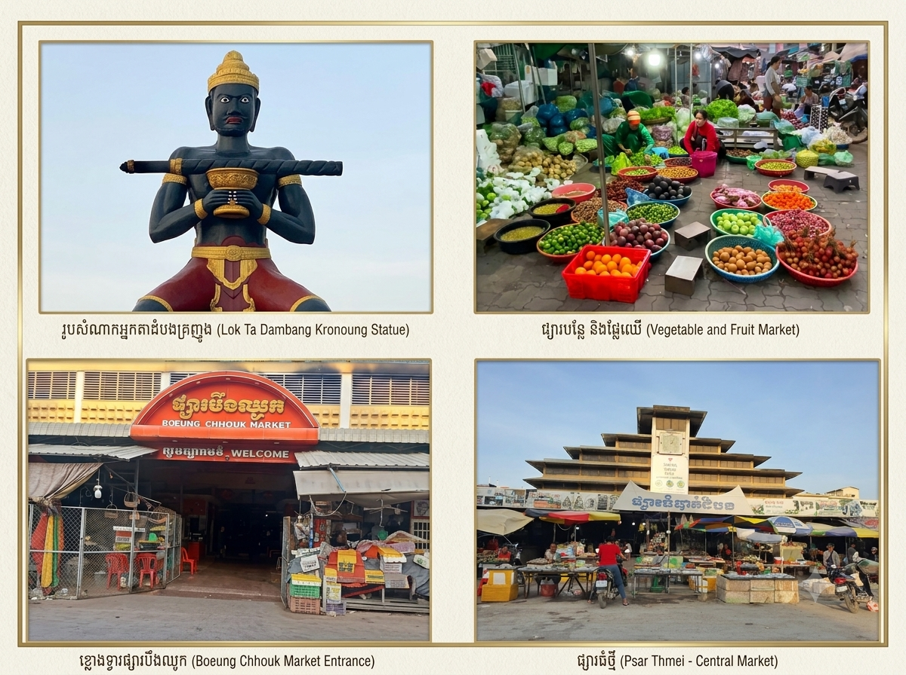
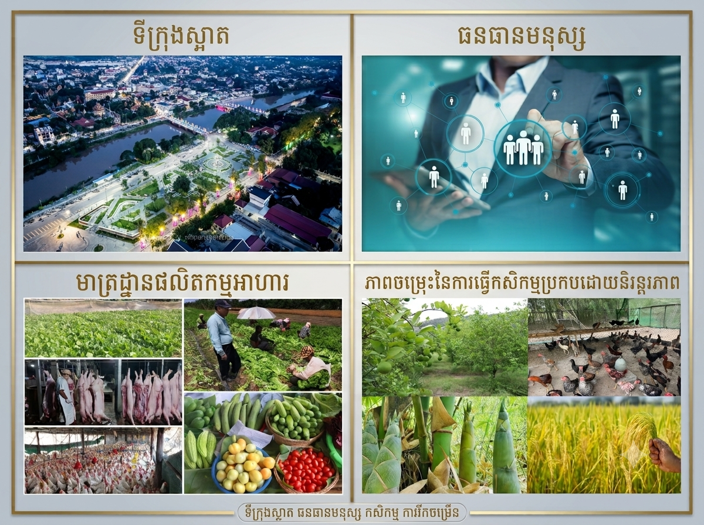

I. ទីផ្សារគោលដៅក្នុងស្រុកខេត្តបាត់ដំបង
ប្រជាពលរដ្ឋ និងអ្នកប្រើប្រាស់ក្នុងខេត្ត៖
ប្រជាជនដែលរស់នៅក្នុងក្រុងបាត់ដំបងនិងតាមបណ្តាស្រុកនានាដែលមានតម្រូវការខ្ពស់លទំនិញប្រើប្រាស់ប្រចាំថ្ងៃចំណីអាហារសេវាកម្មសុខាភិបាល
និងការកម្សាន្ត។
វិស័យអប់រំ និងយុវជន៖ សិស្សានុសិស្ស
និងនិស្សិតរាប់ម៉ឺននាក់ដែលកំពុងសិក្សានៅតាមសាកលវិទ្យាល័យ
និងវិទ្យាល័យនានាក្នុងខេត្តដែលជាទីផ្សារគោលដៅដ៏ធំសម្រាប់បច្ចេកវិទ្យាហាងកាហ្វេសៀវភៅនិងការស្នាក់នៅ។
អាជីវកម្ម និងសហគ្រាសក្នុងស្រុក៖
ម្ចាស់អាជីវកម្មខ្នាតតូច និងមធ្យម (SMEs) ក្នុងខេត្ត
ដែលត្រូវការទិញវត្ថុធាតុដើម សេវាកម្មបច្ចេកវិទ្យា
និងការផ្គត់ផ្គង់ការិយាល័យដើម្បីដំណើរការអាជីវកម្មរបស់ពួកគេ។

II. សក្តានុពលសេដ្ឋកិច្ចផ្ទៃក្នុងខេត្ត
សក្តានុពលដីធ្លី និងកសិកម្មក្នុងតំបន់៖
ខេត្តបាត់ដំបងមានផ្ទៃដីកសិកម្មធំធេង និងមានជីជាតិ
ដែលអំណោយផលដល់ការផ្គត់ផ្គង់ស្បៀងអាហារ ស្រូវអង្ករ បន្លែ
និងផ្លែឈើស្រស់ៗសម្រាប់តម្រូវការផ្ទាល់ខ្លួនរបស់ប្រជាជនទូទាំងខេត្ត
ដោយមិនខ្វះខាត។
ការរីកចម្រើននៃអាជីវកម្មកែច្នៃក្នុងស្រុក៖
សក្តានុពលក្នុងការបង្កើតរោងចក្រខ្នាតតូចដើម្បីកែច្នៃកសិផលក្នុងខេត្តស្រាប់
(ដូចជា ការធ្វើនំ ចំណីអាហារក្រៀម ឬភេសជ្ជៈ)
ដើម្បីលក់ចែកចាយនៅលើទីផ្សារក្នុងខេត្តផ្ទាល់។
ការអភិវឌ្ឍន៍ហេដ្ឋារចនាសម្ព័ន្ធ និងទីក្រុងស្អាត៖
ក្រុងបាត់ដំបងមានការរៀបចំសណ្តាប់ធ្នាប់ល្អ ផ្លូវថ្នល់ខ្វាត់ខ្វែង
និងការអភិរក្សផ្ទះបុរាណ ដែលធ្វើឱ្យតម្លៃអចលនទ្រព្យ
និងឱកាសបើកអាជីវកម្មថ្មីៗក្នុងក្រុងមានការកើនឡើងខ្ពស់។
កម្លាំងពលកម្មវ័យក្មេង និងធនធានមនុស្ស៖
ជាខេត្តកណ្តាលដែលមានសាកលវិទ្យាល័យច្រើន
ធ្វើឱ្យបាត់ដំបងសម្បូរទៅដោយធនធានមនុស្ស
និងកម្លាំងពលកម្មវ័យក្មេងដែលមានចំណេះដឹងស្រាប់
ដើម្បីបម្រើឱ្យការងារស្រាវជ្រាវ បច្ចេកវិទ្យា
និងអាជីវកម្មនានាក្នុងខេត្ត។